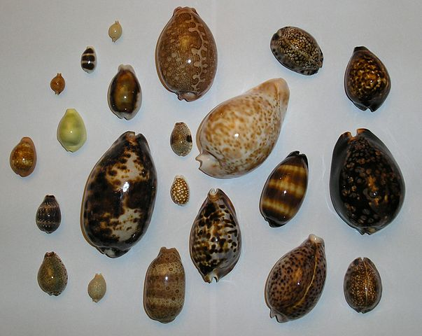
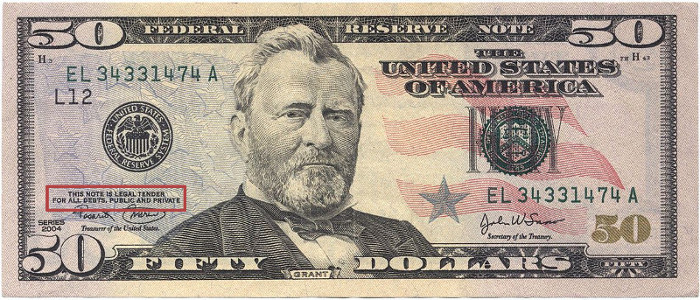
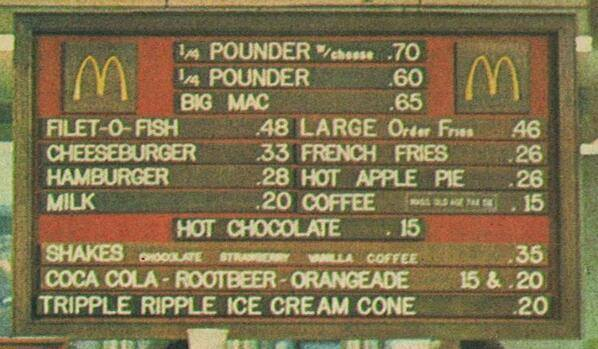
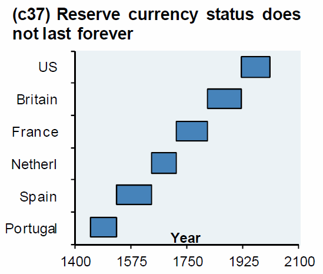

What is Money?
Andrei Ivanitskii
May 22, 2020
Creative Commons Zero 1.0 Universal(Press ? for help, n and p for next and previous slide)
1 History of Money
2 Prehistory — Barter
Direct exchange of good or services without using a medium of exchange (such as money)
2.1 Limitations
- Difficult to find a match (does not scale)
- Not always feasible (how many apples for a horse?)
- No common measure of value
3 Primitive Money
3.1 Cowrie Shells

3.2 Problems With Primitive Money
They are not universal, nor scarce
4 Commodity Money
4.1 Grains
4.1.1 Pros
- Scarce
- Fairly easy to transport
- Divisible
- More universal (than seashells)
4.1.2 Cons
- Not really universal (differ in quality, size, type)
- Not easy to store
4.2 Gold

4.2.1 Pros
- Really scarce
- Universal
- Divisible
- Easy to transport
- Easy to store
4.2.2 Cons
- Not easy to verify
- Not divisible enough
4.2.3 Silver, Copper as Commodity Money?
Note: Silver and Copper arose not because they were good money, but because gold was not good enough
5 Representative Money
A medium of exchange that represents something of value, but has little or no value of its own
5.1 Pros
- Scarce (as value they represent)
- Universal (as value they represent)
- Divisible
- Easy to transport
- Easy to store
- Easy to verify
5.2 What is Wrong with Representative Money?
Trust
As any promise it will be broken…
5.3 Example: Gold Standard in the US
5.3.1 Gold Standard

"Fifty dollars in gold coin payable to the bearer on demand"
5.3.2 Executive Order 6102
On April 5, 1933 by President Franklin D. Roosevelt
"forbidding the hoarding of gold coin, gold bullion, and gold certificates within the continental United States"
5.3.3 "Nixon Shock"
On August 15, 1971 by president Richard Nixon ended international convertibility of the U.S. dollar to gold
5.3.4 Federal Reserve Note

"This note is legal tender for all debts, public and private"
5.3.5 What Happened Next?

McDonald's menu from 1971
See more examples and analysis at WtfHappenedIn1971.com
6 Fiat Money
A currency established as money, often by government regulation, but that has no intrinsic value
6.1 Problems With Fiat Money
Government has power to debase it. Unpredictably.
As any power it will be abused…
6.2 History of Reserve Currencies

7 Bitcoin
- Pure digital currency
- Limited predictable supply (21 million)
- No single entity in charge
8 Is Bitcoin Money?
If Cowrie shells, gold, gold certificates, fiat notes are money.
Why is bitcoin not money?
9 Observations About Money
- Natural selection — the best money will win worse ones
- Convergence — money tend to converge to a single (universal) unit
10 Comparison
| Asset | convenience | backed by |
|---|---|---|
| Gold | low | belief that supply will not change drastically |
| Fiat | high | belief that government will not abuse it |
| Bitcoin | high | math |
What would you choose?